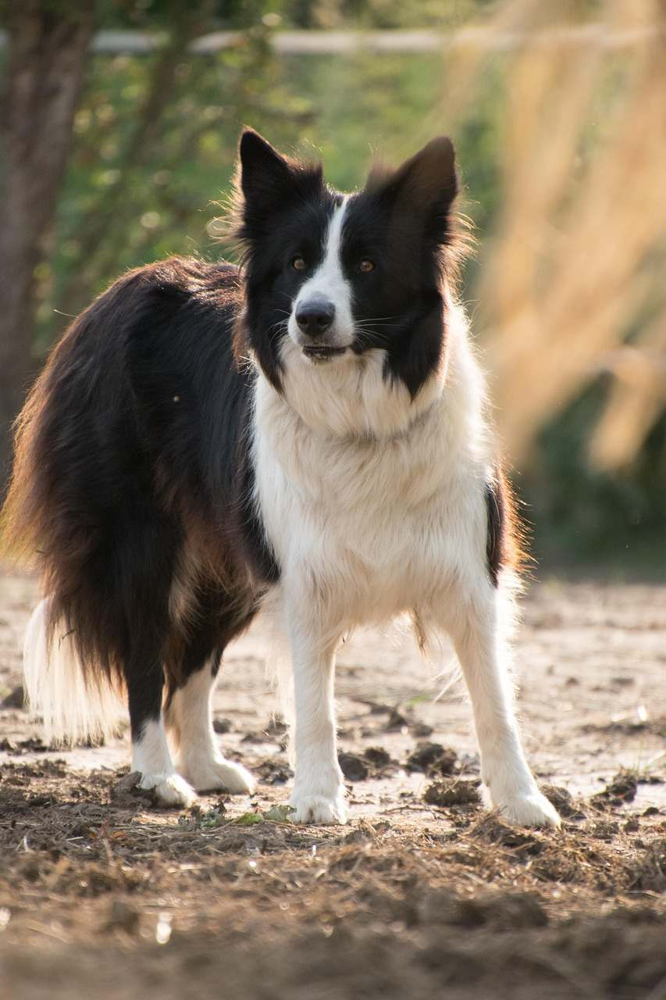

Hoito kattaa 24h hoidon, vähintään 3 lenkkiä sekä ruokinnat ja muun aktivoinnin
Päivähoito:
Sisältää tutustumiskäynnin, jos asiakas on uusi
Hoito kestää enintään 10 tuntia kerrallaan
Hoito sisältää omistajan toiveiden ja lemmikin tarpeiden mukaan yhden tai kaksi lenkkiä, aktivointia ja ruokinnan. Pääosin hoito on koiran silmällä pitämistä esimerkiksi omistajan työpäivän aikana
Lenkitys:
Sisältää tutustumiskäynnin, jos asiakas on uusi
Sisältää yhden tunnin kävelylenkin, mahdollista sopia myös eripituisia lenkkejä
Lenkityspaikalle on päästävä julkisilla, sillä minulla ei ole autoa käytössä, mutta jos paikka on asuinpaikkani lähellä, voin kulkea sinne kävellen. Julkisilla matkustamisesta tulee lisämaksu lenkin lisäksi (+3e)

Käytänteet
Otan ainoastaan yhden perheen koiran tai koiria kerrallaan hoitoon (max 2 koiraa)
Jokaisella koiralla on oltava ajantasaiset rokotukset sekä todistukset niistä
Omistajan kanssa tehdään hoitosopimus koskien hoitojaksoa
Jos olet uusi asiakas, täytyy ennen hoitojaksoa olla tutustumiskäynti kotonani, jotta koira pääsee tutustumaan kotiini sekä minuun. Tapaamisessa sovimme tarkemmin koirakohtaisista käytänteistä, käydään läpi sekä allekirjoitetaan hoitosopimus sekä tarkastan koiran rokotteet. Jos koen, ettei koira sovikaan hoidokikseni tai asiakas kokee, ettei koira sovi luokseni hoitoon, on tässä vaiheessa ennen sopimuksen allekirjoittamista mahdollista vetäytyä sovitusta hoitojaksosta
Koiran täytyy kyetä olla kerrostaloasunnossa ja kestettävä kaupungin ärsykkeitä (muita koiria, autoja, pyöriä, muista asunnoista kantautuvaa melua), koska asun kerrostaloasunnossa, enkä voi taata koiralle täysin rauhallista oleskeluympäristöä
Hoitopaikassa on juoma- ja ruokakupit, joitakin leluja ja koirankakkapusseja
Hoitojakson ajan voin viestitellä koiran kuulumisia omistajalle niin usein kuin tämä haluaa!
Koiralle on otettava mukaan:
Riittävästi sopivaa ruokaa koko hoitojakson ajaksi. Jos ruoka loppuu kesken, omistaja maksaa minulle takaisin ostamani koiranruoan
Herkkuja ja luita, joista koira tykkää
Koiralle vaatteita, jos hän niitä tarvitsee esimerkiksi kylmän takia
Talutushihnan sekä valjaat ja/tai kaulapanna
Lempilelut ja muita aktivointivälineitä, jos koiralla on sellaisia
Peti tai muu lepopaikka, jos koira sellaista käyttää